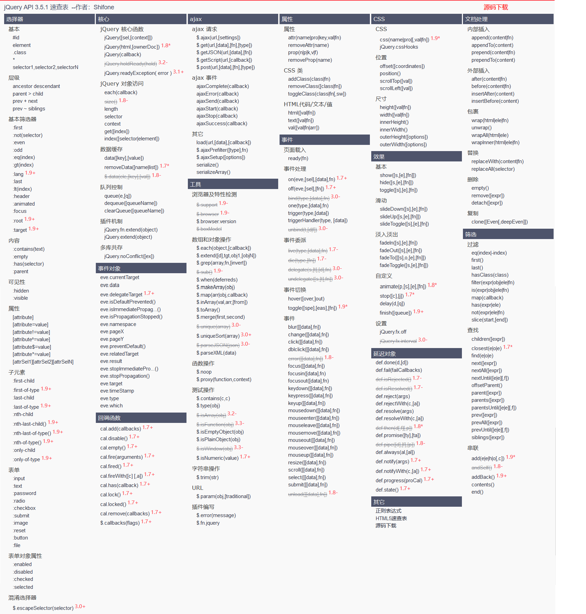

一、jQuery的初识
首先要引入jQuery的JS，在head中引入，JS是从官网下载的；
jQuery官网-下载区
jQuery有两种Js，一种是生产的，已编译的JS，从官网下来是：jquery-3.6.0.min.js
另一种是开发模式，未被编译的JS：jquery-3.6.0.js
一般情况下我们采用生产版本的，也可以通过百度搜索CDN加速的在线jQuery链接版本；
jQuery公式：jQuery(selector).action()，也就是$(selector).action()
选择器selector就是css的选择器；
以a标签为例：使用js的方式，是先定义一个方法名为alert_js；
然后定义方法的用途：function alert_js(){ alert('test function by different methods!'); };
引用这个alert_js的事件，则需要在html的a标签中定义事件；
如：onclick="alert_js()"，这样在点击a标签的时候，才会触发js的function()；
如果使用jQuery呢，则是可以直接在script标签当中，直接定义触发事件和方法：
如：$('#test-jquery').click(function alert_jquery(){ alert('test function by jQuery'); });
jQuery则是直接将事件和方法，都在script中完成了；不需要在a标签当中，插入onclick事件；
当然jQuery和js两者对事件的定义有所区别，比如js是使用onclick，在jQuery是使用click；
另外，jQuery的选择是是#开头的，所谓的选择器就是css选择器
js测试
jQuery测试
二、jQuery-选择器部分
jQuery选择器其实就是CSS选择器,CSS中的选择器jQuery都能用，所以js和jQuery上还是有所区别的；
下面是以a标签，id是label_a，有个类是class_a为例，两者差别如下：
选择器/使用方法
JS jQuery
标签选择器
document.getElementsByTagName('a')
$('a').action();
ID选择器
document.getElementById('label_a')
$('#label_a').action();
Class Name选择器
document.getElementsByClassName('class_a')
$('.class_a').action();
注：以上的表格可以代码可以作为学习，包含样式的使用；style也可以设置在head独立的style标签内
针对jQuery而言，也有以下网址可以参考：
======》jQuery API 3.5.1 速查表《====== 这个速查表包含大部分jQuery的大部分方法，第一列就是选择器，速查表截图：
速查表截图
隐藏速查表

三、jQuery事件部分，也就是action()
小知识点：初期网页加载完毕的写法是：$(document).ready(function (){});后来觉得麻烦，就简化成：$(function (){});
以下是在div内获取当前鼠标坐标，作为演示：
1. 首先，要有鼠标的显示，并设置id：< span id="mouseCoordinate">< /span >
2. 设置div，设定ID和框定范围，具体css样式请参考代码，< div id="mouseMove">< /div>
样式也可以放head标签里的style标签内，这里css标签是通过id获取，上方table是通过标签获取；
3. 定义jQuery的方法：由于具体事件需要页面加载完成后执行的，所以先定义一个：$(function (){});
接着，我们要获取的是id为mouseMove这个div里面的坐标，触发事件为鼠标移动mousemove：所以这个jQuery就变成了：
$(function (){
$(#mouseMove).mousemove()
});
通过mousemove，我们已经获取了鼠标的具体坐标了，但是我们需要将这些坐标显示到id为mouseCoordinate的span标签中;
因此，要设置一个参数输入到function里头去，这个参数由于是局部变量，用完即弃，可以随便命名；
这里用parameter，也可以用单个字母表示，坐标分别是pageX和pageY，这个是从mousemove里头输出的固定参数：
$(function(){
$('#mouseMove').mousemove(
function (parameter){
$('#mouseCoordinate').text('X轴：' + parameter.pageX + '， Y轴：' + parameter.pageY)
}
)
});
这些jQuery的事件、特效或者方法、函数等，都可以在上方的《二、jQuery-选择器部分》的速查表查到！！！
事件演示实例：
mouse 坐标：
鼠标在此div移动即可获取鼠标坐标